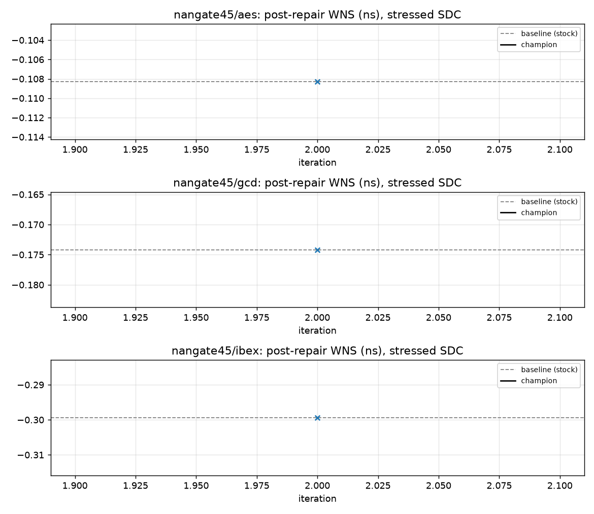
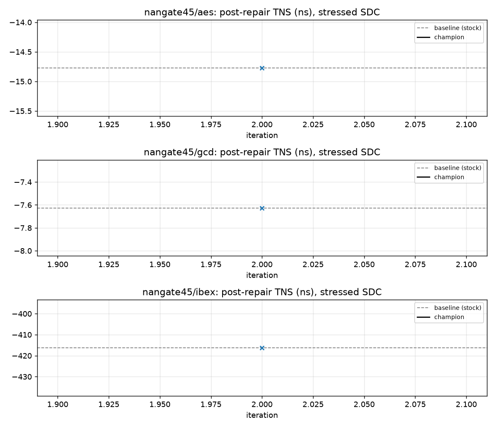
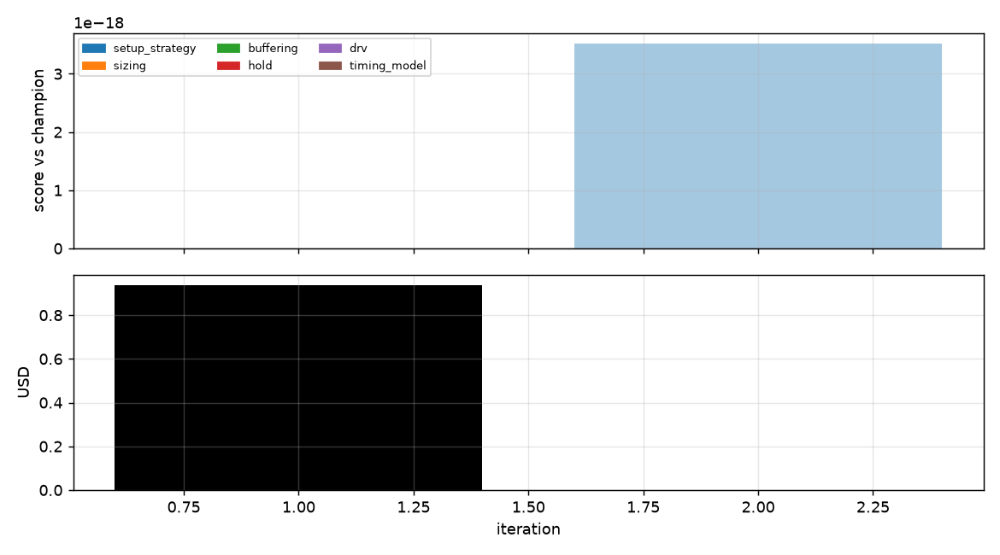

champion: iteration 0 · original rsz
Open the mentor-friendly RSZ architecture walkthrough →



| # | status | cluster | score vs champion | title | links |
|---|---|---|---|---|---|
| 1 | crashed | +0.00000 | Error: [('/Users/kavyaagrawal/Desktop/Github repos and Projects/VLSI_EDA_Optimisation_BTec | summary · feedback · patch · hypothesis | |
| 2 | rejected | setup_strategy | +0.00000 | summary · feedback · patch · hypothesis |